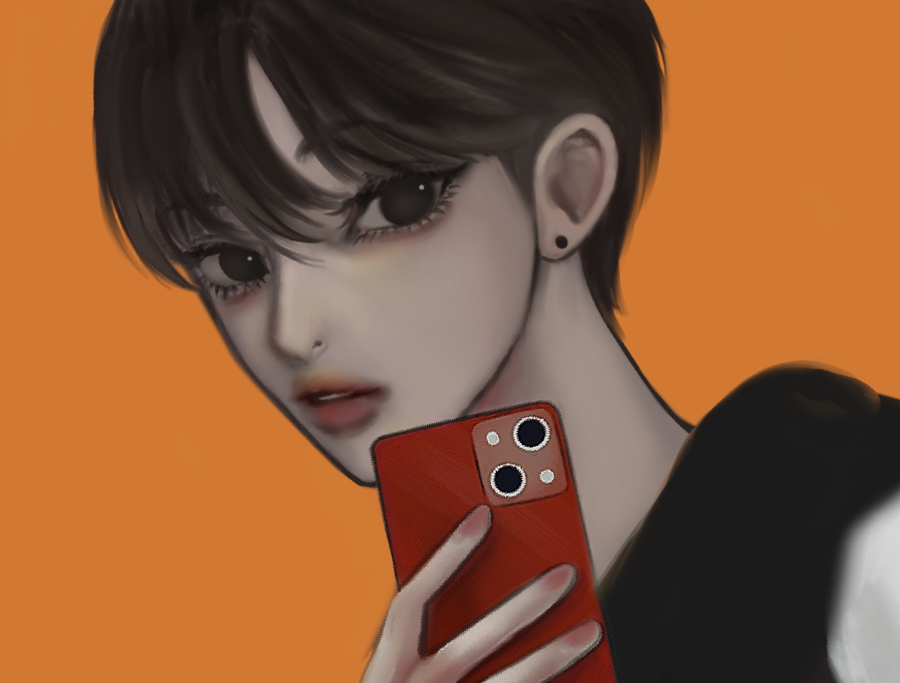

dwdwjdwjd

Memory 머플러
텍스트
아이는 살아 숨 쉬는 동안에 담아낸 것들을 목에 감아 두르며 살아간다.
두고두고 차곡 추억들이 담긴 길게 짜여진 낡은 머플러를 위로 감싸고 풀었다가 결국
빈틈없이 감아져 숨을 쉴 수 없게 되어 목과 숨통에 답답함이 밀려오기 시작한다
텍스트
떄로는 머플러의 무게가 무거워져 아이에게 버거움을 느끼게 하고,
떄로는 중심을 잃어 휘청거리기도 한다.텍스트
이 추억들이 가벼워져 아이와 함께 그것들과 조금씩 가벼워져 상기되는 날
여름에 찾아 온 그 아이가 머플러를 넓게 풀어 그 안에 이야기들을 하나하나 읽기 시작한다.
텍스트
그러고 길어진 머플러를 오래된 옷장에 곤히 예쁘게 접어 넣어놓는다.무거워져 추억되는 날 겨울에 찾아 본 나의 머플러는 목에 두를 수 없을만큼 길어졌다.
텍스트
그 안에서도 빈틈없이 길어져 숨을 셀 수 없이 자라고 있었다.
Camera 필름

Camera 필름
텍스트
분주한 많은 사람들 틈에 눈으로는 보이지 않는 ,
무언가와 우리는 함께 숨쉬어 살아간다.
많은 먼지와 헷빛이 온몸에 붙어
온몸으로 잉크처럼 짙게 번지어 하나의 필름에 묻어난다.
텍스트
가만히 서서 그림자가 흔들리지 않게 숨을 죽여
셔터가 내려지면 필름 속에는 고요하고 , 숨죽인 갈망들의 잠상들이 나타난다.
텍스트
눈에 보이지 않는 아득하고 흐릿한 잠상을 오늘도 어김없이 담으러 다닌다.
살아가면서 우리는 얼마나 가치있는 잠상을 찾아내야 앨범을 완성할 수 있을 것인가
Frog Boy

Frog Boy 여름
텍스트
여름을 알리는 개구리 울음소리에 나의 소리는 여름에 묻히고 만다
말을 하고 소리를 질러도 나의 목소리는 여름의 소리를 이기지 못한다.텍스트
소년들은 현실을 받아들이고 싶지않아, 계절에 맞지않은 옷과 헤드셋으로 귀를 막는다.
저 소리들은 소년들에겐 엄청난 소음으로 들려와 자신들을 괴롭게 만든다.
텍스트
가을이 오면 개구리 소리가 더이상 나지 않을 것이라는
생각에 여름을 등지고 가을을 기다린다.
텍스트
고게를 돌려도 들리는 소리에 나는 음악으로 귀를 막았다.
전원이 다 꺼져갈 떄 즈음에야 알 수 있었다.
저 소리는 꺼져가는 여름을 애처로이 붙잡는 소리였다.
텍스트
있는 힘을 다해 우는 개구리들을 보며 소년들은 부끄러워 고개를 들지 못한다.
저 지나가는 계절의 한 송이 마저 붙잡지 못하고
그들은 여름이 다시 온다는 것을 알고 있기에 오만하게 가을을 기다린다.
Dig up

Dig up 어항
텍스트
예쁜 무늬를 가진 물고기들이
소녀의 지독한 내장냄새를 맡고 소녀 주위로 모여든다.
모여든 물고기들은 소녀의 가장 지독한 내장들을 파고 먹기 시작한다.
텍스트
소녀는 자신의 몸에 구멍이 난다는 것은 알지 못한 채로
말로는 표현할 수 없는 고통을 느끼고, 소리를 질러도 물고기들에겐 들리지 않는다.
텍스트
물고기가 몸을 뒤틀며 속을 탐하고 있는 것은, 그녀의 내장이 가장 향기로웠기 때문이다.
소녀는 내장이 뒤집혀 먹히고 있다는 것을 알지 못한 채로
몸에서 피가 흘러도, 소녀는 그 피가 자신의 것이라는 사실을 모른다.
텍스트
소녀는 머리에 어항이 뒤집혀 쓰여 있다는 것을 알지 못한 채로
몸에서 피비린내가 나도, 소녀는 전혀 그 냄새가 자신의 것이라는 것을 모른다.
텍스트
소녀는 물고기에게 말했다.
"덕분에 오늘도 숨을 쉬며 살아있어. 고마워
너가 떠나버리면 난 그냥 시체나 다름이 없어"
>Glow talker

Glow talker 백치미
텍스트
세상과 동떨어진 마치 아무것도 알지 못하는 , 깨끗한 아이의 모습인 사람들
그리고 그 정반대의 사람들이 살아간다.
텍스트
" 이상적인 사람과 이상적이지 못한 사람들 "
텍스트
자기 자신이 대단하다고 느끼는 사람은 자신을 뽐내고 ,남을 비난하며
희열을 느끼며 자신이 "이상적인 사람"이라고 생각한다.
텍스트
하지만 그들 입에서 나오는 언행은 신중하지 못하고 ,
자신의 경박스러움을 인정하지 못하는 연약함이 있다.
텍스트
자신들은 똑똑하기에 더 예민하고 거만함으로 아는 체 하며 희열을 느낀다.그들의 지식들은 자신을 병들게 하고 정신을 산만하게 만들고,아는 것이 많다는 허영심을 가진다.
텍스트
반대로 어린아이처럼 순수하고 천진난만한 사람들을 보고 '백치미'라는 별명을 붙인다.
백치미의 얼굴에는 선한 밝은 미소로 뽐내지 않지만 강한 향기로움이 가득하다
대부분의 어린아이같은 백치미를 보면 자신의 지식으로 가르치려 한다.
텍스트
비이상적인 사람은 본능적으로 지혜로운 사람들에게
얉은 지혜로움을 보여주며 증명한다.
' 둔감력으로 지식이 단순화 된 백치미가 가장 '이상적인 인간'이기 떄문이다.
텍스트
>phone 수화기

phone 수화
이상하게도 사람들은 자신의 내면의 의사를 솔직하게 전달하는 것에 ,
이전보다 미약한 상태가 되었다.
텍스트
이상하게도 사람들은 자신의 외면적 모습을 집착하게 전달하는 것에 ,
이전보다 창대한 상태가 되었다.
텍스트
이상하게도 사람들은 거리가 먼 외부의 문제에 목소리를 전달하는 것에.
이전보다 예민한 상태가 되었다.
텍스트
의미가 것들은 쉽게 잊혀지고'삭제'되고 만다.
텍스트

Fractions 경쟁
텍스트
뱀의 매력적인 모습과 말로 내면을 깊숙이 파고드는 재주를 가지고 있다.
그리고 예민함을 가지고 있는 개는 뱀의 가장 좋은 먹잇감이 된다.
텍스트
뱀은 자신에게 없는 귀와 다리, 큰 목소리를 가진 개에게 질투를 느낀다.
그런 뱀은 개를 포용하는 척 그것들을 자신의 몸으로 꽁꽁 감아버린다.
텍스트
뱀은 개를 포용하여 추앙하게 만들어 자신의 함정에 빠뜨리기 시작한다.
뱀은 예민한 개가 무엇을 원하는지 그리고 어떤 것을 욕망하는지 알고 있다.
텍스트
뱀은 충성심이 강한 개가 자신의 뜻대로 하자 기분이 좋아진다.
철저한 뱀은 몸을 감아 기회를 보고, 언제든지 개의 머리를 집어 삼길 수 있다고 생각한다.
텍스트
개는 이해심이 좋은 뱀이 자신의 뜻을 알아 기분이 좋아진다.
영리한 개는 한 발 물러나 기회를 보고, 언제든지 뱀의 머리를 물어 뜯을 수 있다고 생각한다.
텍스트

Butterfly 희생
텍스트
화려한 날개를 가진 나비일수록 그들에겐 많은 꿀을 원한다.
텍스트
날개에 영양분을 주기 위해선 꽃의 꿀이 가장 필요하기 떄문이다.
겨울이 오기전에 나비는 자주 꽃을 찾아가서 꽃의 꿀을 가져가 버린다.
텍스트
순수하고 결백한 꽃은 아무 저항없이 나비에게 꿀을 나누어준다.
꽃이 죽기전에 나비는 자주 꽃을 찾아가서 꿏의 꿀을 모두 가져가 버린다.
텍스트
하지만 꽃은 나비를 원망하지도 증오하지 않았다.
나비는 꽃의 희생에 고마움을 느끼지 않았고, 그것은 별로 중요하지 않았다.
텍스트
시간이 지난 꽃은 시들고, 나비는 자신에게 꿀을 줄 새로운 꽃을 찾기 위해 떠난다.